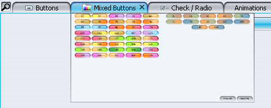
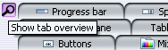
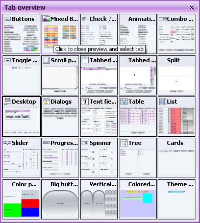

This is the fourth part of the series that describes the additional capabilities that you can get
on your tabbed panes once you start using the Substance
look-and-feel.
- The first
part described close buttons and animation on modified tabs
- The second
part described vetoable close buttons and vertical tabs.
- The third
part described single-click close of multiple tabs and ustom alignment of tab texts on left and
right placement.
This entry describes new features available in the next version of
Substance look-and-feel (code-named Firenze, currently
available in core code freeze - release candidate planned April 30).
The first feature is hover preview popup of tabs and is borrowed from
Opera 9.0 beta browser. Move the mouse over a tab, wait for 2
seconds (configurable) and you will be shown a small preview popup window with the contents of
the tab:

Later part of this entry describes how to customize the popup delay, popup dimension, popup
existence itself (disable this feature on app-specific basis for some tabs) and preview painting
(to provide app-specific preview painting logic).
The second feature is tab overview dialog and borrows from ideas from both IE7 and
various Firefox extensions. First, the overview of existing functionality in the above browsers:
- QuickTabs in IE7
(currently in Beta2). When more there are at least two open tabs, a button is displayed in the
left portion of the tab strip. When you click on it, the contents of the current tab are overlayed
with a tab overview, showing a thumbnail for each open tab.
- Tab
Sidebar Firefox extension. Opens a side bar (much like Office Taskbar) with single column
thumbnail view of all open tabs.
- Reveal Firefox extension. When F2 or
Alt-` is clicked, a horizontally scrollable two-row preview is shown. This preview allows tab
rearranging as well as many other operations.
- foxPose Firefox extension. Adds a
button in the bottom left corner of the window. When the button is clicked, a new tab with
thumbnails is added to the browser.
- Tab Catalog Firefox extension.
Adds a button in the right portion of the menu bar. When mouse hovers over this button, an
overview window is shown.
- Ctrl Tab Firefox extension. When Ctrl-Tab is
pressed, a three-window view allows switching between open tabs (like Alt-Tab in Windows Vista).
The current drop of Substance 2.3 allows adding the overview functionality to your tabbed panes.
When enabled, the overview button is shown alongside your tabs (depending on the tab placement
and orientation):

When this button is clicked, an overview dialog is shown. This dialog contains thumbnails
for all tabs. Clicking on a thumbnail close the overview dialog and selects the corresponding
tab:

The overview thumbnails are generated in a separate thread and faded-in as soon as they
are available. This keeps your application responsive and user experience pleasant (hopefully).
Below I describe how to customize the dialog dimension and location, overview existence
itself (disable this feature on app-specific basis for some tabbed panes) and preview
painting (to provide app-specific preview painting logic).
In order to enable the above functionality, all you need to do is to put the following
client property on your tabbed pane(s) or globally on the UIManager:
jtp.putClientProperty(SubstanceLookAndFeel.TABBED_PANE_PREVIEW_PAINTER,
new DefaultTabPreviewPainter());
The DefaultTabPreviewPainter is the default implementation of the tab preview and
overview logic. Depending on your need, you can easily provide you own specific logic for
all or some of the functionality. Here is a list of all customizable features:
/**
* Base class for tab preview painters.
*
* @author Kirill Grouchnikov
*/
public abstract class TabPreviewPainter {
/**
* Draws a tab preview on the specified graphics.
*
* @param tabPane
* Tabbed pane.
* @param tabIndex
* tabIndex Tab index for the preview paint.
* @param g
* Graphics context.
* @param x
* X coordinate of the preview area.
* @param y
* Y coordinate of the preview area.
* @param w
* Width of the preview area.
* @param h
* Height of the preview area.
*/
public void previewTab(JTabbedPane tabPane, int tabIndex, Graphics g,
int x, int y, int w, int h) {
}
/**
* Checks whether the specified tab component is previewable.
*
* @param tabPane
* Tabbed pane.
* @param tabIndex
* Tab index for the preview paint.
* @return <code>true</code> if the specified tab component is
* previewable, <code>false</code> otherwise.
*/
public boolean hasPreview(JTabbedPane tabPane, int tabIndex) {
return false;
}
/**
* Returns the screen bounds of the tab preview dialog window.
*
* @param tabPane
* Tabbed pane.
* @return Screen bounds of the preview dialog window of the specified
* tabbed pane.
*/
public Rectangle getPreviewDialogScreenBounds(JTabbedPane tabPane) {
Rectangle tabPaneBounds = tabPane.getBounds();
Point tabPaneScreenLoc = tabPane.getLocationOnScreen();
return new Rectangle(tabPaneScreenLoc.x, tabPaneScreenLoc.y,
tabPaneBounds.width, tabPaneBounds.height);
}
/**
* Returns the owner of the overview dialog of the specified tabbed pane. If
* this function retuns a non-<code>null</code> value, the overview
* dialog will be modal for the corresponding frame.
*
* @param tabPane
* Tabbed pane.
* @return If not <code>null</code>, the overview dialog for the
* specified tabbed pane will be modal for the corresponding frame.
*/
public JFrame getModalOwner(JTabbedPane tabPane) {
return null;
}
/**
* Checks whether the specified tabbed pane has an overview dialog.
*
* @param tabPane
* Tabbed pane.
* @return <code>true</code> if the specified tabbed pane has an overview
* dialog, <code>false</code> otherwise.
*/
public boolean hasOverviewDialog(JTabbedPane tabPane) {
return false;
}
/**
* Checks whether the specified tabbed pane has a preview window for the
* specified tab.
*
* @param tabPane
* Tabbed pane.
* @param tabIndex
* Tab index.
* @return <code>true</code> if the specified tabbed pane has a preview
* window for the specified tab, <code>false</code> otherwise.
*/
public boolean hasPreviewWindow(JTabbedPane tabPane, int tabIndex) {
return false;
}
/**
* Returns the dimension for the tab preview window.
*
* @param tabPane
* Tabbed pane.
* @param tabIndex
* Tab index.
* @return Dimension of the tab preview window for the specified tab in the
* specified tabbed pane.
*/
public Dimension getPreviewWindowDimension(JTabbedPane tabPane, int tabIndex) {
return new Dimension(300, 200);
}
/**
* Returns extra delay (in milliseconds) for showing the tab preview window.
* The base delay is 2000 milliseconds (2 seconds). This function must
* return a non-negative value.
*
* @param tabPane
* Tabbed pane.
* @param tabIndex
* Tab index.
* @return Non-negative extra delay (in milliseconds) for showing the tab
* preview window.
*/
public int getPreviewWindowExtraDelay(JTabbedPane tabPane, int tabIndex) {
return 0;
}
}
The default logic provides implementations of the following four functions (note
the implementation of previewTab that simply scales down the current state of the tab -
thanks to Romain for contributing the efficient thumbnail computation code):
/**
* Default implementation of the tab preview painter. The tab preview is a
* scaled-down (as necessary) thumbnail of the relevant tab.
*
* @author Kirill Grouchnikov
*/
public class DefaultTabPreviewPainter extends TabPreviewPainter {
/*
* (non-Javadoc)
*
* @see org.jvnet.substance.tabbed.TabPreviewPainter#hasPreview(javax.swing.JTabbedPane,
* int)
*/
@Override
public boolean hasPreview(JTabbedPane tabPane, int tabIndex) {
return (tabPane.getComponentAt(tabIndex) != null);
}
/*
* (non-Javadoc)
*
* @see org.jvnet.substance.tabbed.TabPreviewPainter#previewTab(javax.swing.JTabbedPane,
* int, java.awt.Graphics, int, int, int, int)
*/
@Override
public void previewTab(JTabbedPane tabPane, int tabIndex, Graphics g,
int x, int y, int w, int h) {
Component tabComponent = tabPane.getComponentAt(tabIndex);
if (tabComponent == null)
return;
// if (!tabComponent.isShowing())
// return;
int compWidth = tabComponent.getWidth();
int compHeight = tabComponent.getHeight();
if ((compWidth > 0) && (compHeight > 0)) {
// draw tab component
BufferedImage tempCanvas = new BufferedImage(compWidth, compHeight,
BufferedImage.TYPE_INT_ARGB);
Graphics tempCanvasGraphics = tempCanvas.getGraphics();
tabComponent.paint(tempCanvasGraphics);
// check if need to scale down
double coef = Math.min((double) w / (double) compWidth, (double) h
/ (double) compHeight);
if (coef < 1.0) {
int sdWidth = (int) (coef * compWidth);
int sdHeight = (int) (coef * compHeight);
int dx = (w - sdWidth) / 2;
int dy = (h - sdHeight) / 2;
g.drawImage(SubstanceCoreUtilities.createThumbnail(tempCanvas,
sdWidth), dx, dy, null);
} else {
// System.out.println("Putting " + frame.hashCode() + "
// -> " + snapshot.hashCode());
g.drawImage(tempCanvas, 0, 0, null);
}
}
}
/*
* (non-Javadoc)
*
* @see org.jvnet.substance.tabbed.TabPreviewPainter#hasPreviewWindow(javax.swing.JTabbedPane,
* int)
*/
@Override
public boolean hasPreviewWindow(JTabbedPane tabPane, int tabIndex) {
return true;
}
/*
* (non-Javadoc)
*
* @see org.jvnet.substance.tabbed.TabPreviewPainter#hasOverviewDialog(javax.swing.JTabbedPane)
*/
@Override
public boolean hasOverviewDialog(JTabbedPane tabPane) {
return true;
}
}
The features describe above were the last to be added before the core feature freeze for the
next version of Substance LAF (RC on April 30, release on May 14). You are welcome to download
the jars and play with the test application or run the
WebStart demo application.
Note that the first time you run the tab overview dialog it will be a bit slow due to the
multi-colored buttons in the second tab. After that, the subsequent operations will be much
faster (due to image caching in Substance).
In addition, i would like to thank the community for using and testing Substance, reporting
the bugs, suggesting new features and providing bug fixes and helping in internationaliztion efforts.